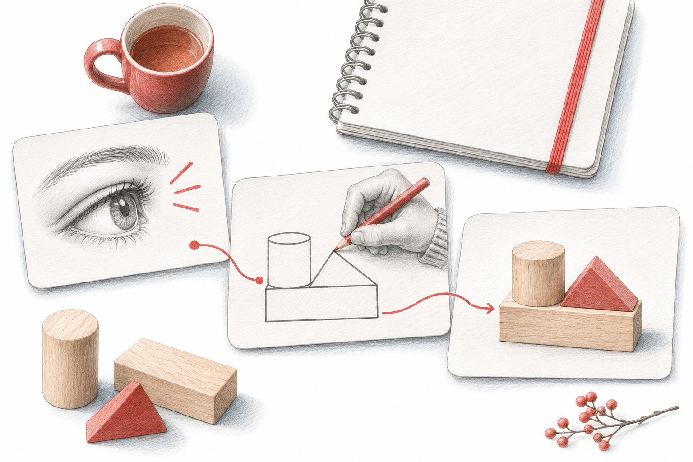

Ein brauchbarer Lektionsplan verbindet Lernvoraussetzungen, Aufgaben und eine anschliessende Entscheidung.

Passt das Lernziel zu dem, was die Klasse schon kann?
☐ Welche Voraussetzungen braucht das Lernziel?
☐ Haben alle diese Voraussetzungen? Wenn nicht: kurzer Einstieg zum Auffrischen einplanen.
Wo steigen die Lernenden aus, die noch Mühe haben?
☐ An welcher Stelle im Plan wird es für sie zu schnell oder zu abstrakt?
☐ Welche Hilfe gibt es dort (Beispiel, Hilfekarte, Partnerarbeit, Zwischenschritt)?
☐ Was machen die Schnellen in dieser Zeit?
Woran erkenne ich am Ende, ob das Ziel erreicht ist?
☐ Gibt es eine Überprüfung, die genau zum Lernziel passt (z. B. Exit-Ticket mit 2 bis 3 Fragen)?
☐ Was mache ich in der nächsten Lektion mit dem Ergebnis?
«Hier ist dein Lektionsplan. Meine Klasse: [Stufe, Vorwissen, was noch nicht sitzt, ohne Namen]. Prüfe den Plan mit diesen drei Fragen: (1) Passt das Lernziel zum Vorwissen? (2) Wo könnten Lernende mit Mühe aussteigen, und welche Hilfe schlägst du dort vor? (3) Woran erkenne ich am Ende, ob das Ziel erreicht ist? Schlag konkrete Änderungen vor.»Die Entscheidung, was du übernimmst, bleibt bei dir. Keine Daten von Lernenden eingeben.
Die KI kennt typische Pläne. Deine Klasse kennst nur du. 📋
Ein brauchbarer Lektionsplan verbindet Lernvoraussetzungen, Aufgaben und eine anschliessende Entscheidung. Eine lückenlose Zeittabelle kann diese Passung verdecken. Plane zuerst den fachlichen Kern und danach die Abfolge.
Bestimme, was die Klasse bereits können muss. Lege einen kurzen Einstieg fest, der genau diese Voraussetzung sichtbar macht.
Suche die schwierigste Stelle im Lernweg. Bereite eine Hilfe und eine sinnvolle Weiterarbeit für bereits sichere Lernende vor.
Formuliere vorab den Abschlussnachweis. Entscheide, was bei sicherem Verständnis und was bei einer verbreiteten Lücke als Nächstes passiert.
Ausgearbeitetes Beispiel, kein Bericht aus einer konkreten Klasse.
Ausgangslage: Der Plan führt direkt zu Prozentänderungen, obwohl der Unterschied zwischen Anteil und Grundwert noch unsicher ist.
Darauf kommt es an: Eine zusätzliche Erklärung am Ende kommt zu spät, wenn die Klasse bereits mehrere Aufgaben mit einer falschen Bezugsgrösse bearbeitet hat.
Eine begründete Lösung: Der Einstieg lässt den Grundwert in zwei Situationen markieren. Bei Unsicherheit folgt ein gemeinsames Beispiel; bei sicherer Zuordnung beginnt die Anwendung. Der Plan enthält damit eine begründete Verzweigung.
Ziel: […]
Notwendiges Vorwissen: […]
Einstieg zum Prüfen: […]
Kritische Stelle: […]
Hilfe dort: […]
Abschlussnachweis: […]
Nächster Schritt bei Verständnis / bei Lücke: […]Minutenplan wirkt verbindlich: Zeitangaben sind Planungsannahmen. Reagiere auf den sichtbaren Lernstand, statt einen Ablauf nur pünktlich abzuhaken.
Viele Methoden ohne Verbindung: Prüfe bei jedem Wechsel, welche fachliche Funktion er erfüllt. Abwechslung allein ist kein Lernnachweis.
Nimm nach der Lektion nur eine Abweichung genauer unter die Lupe. Passe die Stelle an, an der Vorwissen oder Hilfe falsch eingeschätzt wurde.
Woran du die Qualität erkennst: Jede Phase hat eine erkennbare Funktion, und der Abschluss entscheidet nachvollziehbar über die Weiterarbeit.
Ein Plan wird vom erwarteten Lernnachweis rückwärts gelesen. Welche Aufgabe macht das Können sichtbar, welche Vorbereitung ermöglicht sie und welche Hilfe wird an der anspruchsvollsten Stelle gebraucht? Diese Verbindung hilft, einen formal vollständigen Entwurf an die tatsächliche Lerngruppe anzupassen. Nach der Lektion wird die nächste Entscheidung an den beobachteten Lösungen ausgerichtet.
Fiktiver KI-Plan. Die Klasse soll Brüche vergleichen. Der Entwurf beginnt sofort mit unterschiedlichen Nennern und endet mit einer Selbsteinschätzung. Im Einstieg zeigt sich, dass einige Lernende gleich grosse Ganze noch nicht sicher vergleichen.
Begrenze den ersten Entwurf auf ein Lernziel und eine dazu passende Abschlussaufgabe.
Plane zwei mögliche nächste Lektionseinstiege abhängig von den tatsächlich sichtbaren Hürden.
Die Aufgabe verlangt genau das angekündigte Können und ermöglicht eine konkrete Entscheidung für die Weiterarbeit.
Halte eine beobachtete Hürde, eine gelungene Unterstützung und die daraus folgende Anpassung fest.